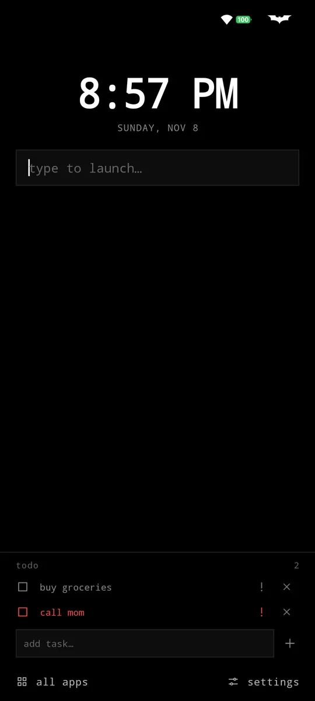
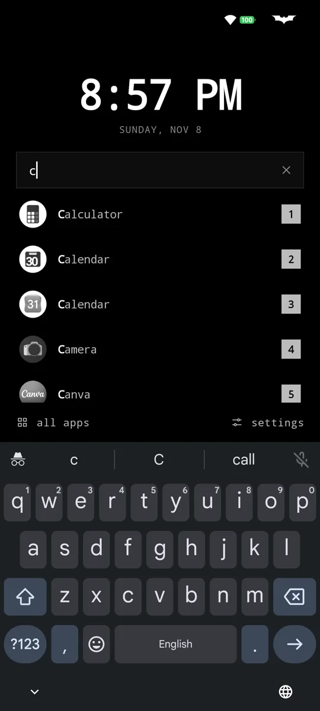
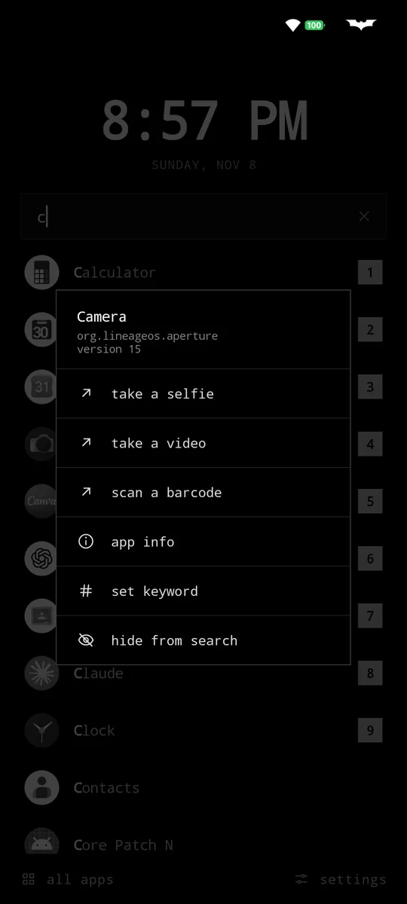
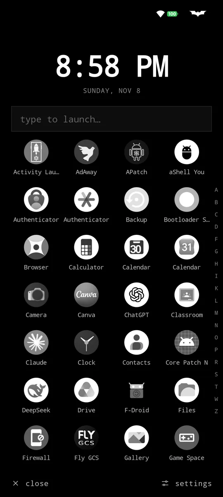
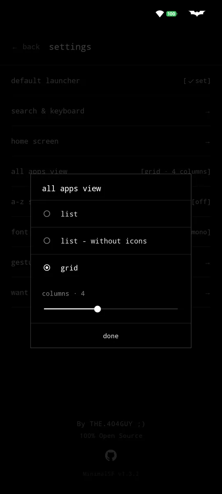
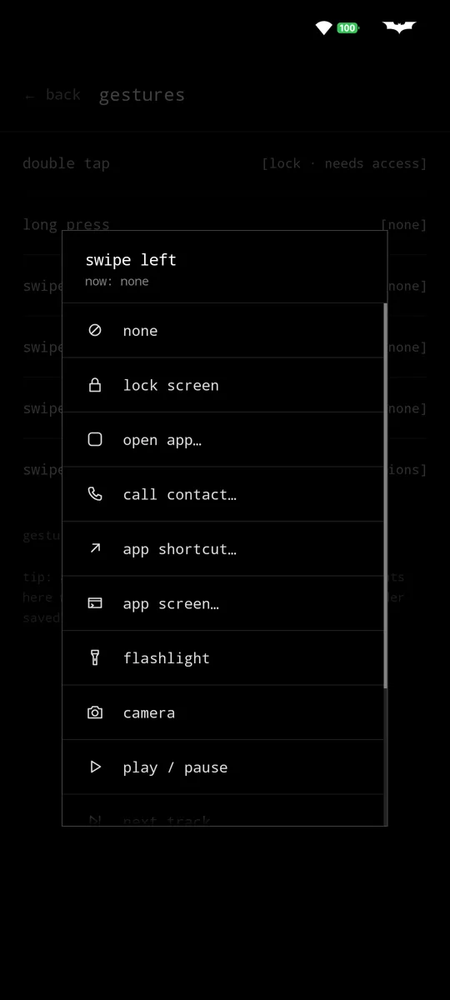
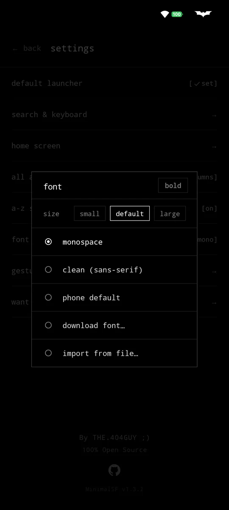
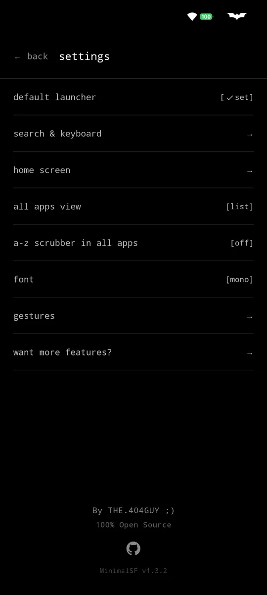

name starts with it
calculator before picasso. The obvious match wins.
MinimalSF
android launcher · v1.3.2 · open source
A black and white home screen built for one thing: getting you to your app before you've finished thinking about it. Under 1 MB. No ads, no trackers, not even the internet permission.
01
Press home and the keyboard is already up. Results narrow as you type, and the moment only one app is left it opens on its own.
calculator before picasso. The obvious match wins.
Give any app a keyword. wa → WhatsApp, yt → YouTube. Optionally the keyword replaces the name entirely.
store finds Play Store. Multi-word names just work.
Still nothing? Any app containing the letters, matched letters lit up in white.
Every result has a number. Type it after your search and that one opens: c2 is the second app for c. No reaching for the screen.








02
Everything is optional. Turn off what you don't use and the home screen is a clock and a search box.
Double tap, long press and four swipes on empty space. Lock the screen, pull down notifications, toggle the flashlight, open an app, call someone, run an app shortcut or jump straight into a specific screen of an app.
A thin bar with whatever's playing, from any music app. Tap to pause, swipe for next or previous, hold to open the player.
A short list right on the home screen, so you remember why you picked up the phone. Mark tasks important, undo a removal, long press to edit.
screen time 2h 14m sits quietly under the date. Tap it for today's top apps. Read on the phone, never sent anywhere.
A list, a list of names with no icons, or a grid of 2 to 7 columns. Optional A–Z strip to jump around. Hidden apps stay here, dimmed, one deliberate step away.
Mono, clean, your phone's font, a free Google Font or your own file, with a bold switch. Hide the clock, date, screen time, music bar or todo. 12 or 24 hour. Themed icon on Android 13+.
03
android.permission.INTERNET
not requested
No network access at all. Nothing to send your data with, even by accident.
accessibility service
optional
Only to lock the screen from a gesture. Asked for when you set that up.
notification access
optional
Only to show the song in the now playing bar.
PACKAGE_USAGE_STATS
optional
Only for today's screen time, read on the phone.
CALL_PHONE
optional
Only if you set a gesture to call a contact.
This page doesn't track you either: no cookies, no analytics, fonts served from here.
04 · optional
MinimalSF Extended is a tiny separate plugin, so the launcher itself stays small. Force stop, freeze, clear data, clear cache and open in freeform, straight from the long press menu (Shizuku or root). Plus extras that don't need either: coloured icons, a hidden search bar, and full control over what the long press menu shows.
MinimalSF Extended05
Free, forever. Pick where you like your updates from.
signing certificate · SHA-256
06
Yes. They show up in search and all apps, labelled · work and · dual.
Of course. Tap "all apps" for a list, a names-only list or a grid, with an optional A–Z strip.
Nothing opens until one is left. Add a letter, type the result's number (w2), or press enter for the top one.
No. There's nothing running in the background, no sync, no network. It's a home screen.
No ads SDK, no analytics, no heavy UI libraries. Just the launcher.
Open an issue on GitHub, or ask in Discussions.